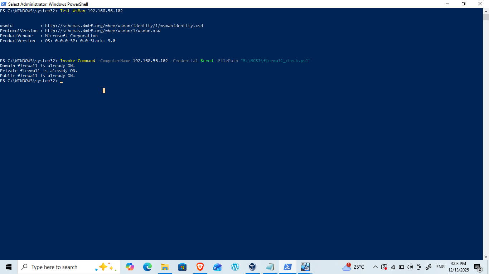

IT & Cybersecurity Projects
Practical labs, security exercises and technical projects demonstrating my developing capabilities in cybersecurity, cloud security and IT.

Security & Threat Protection
Explore security controls, email protection and practical security assessments.
Explore WorkCloud & Identity Security
Explore cloud infrastructure, Azure security and identity protection work.
Explore WorkSIEM & Security Monitoring
Explore log analysis, security monitoring and alert investigation projects.
Explore Work
Network & Firewall Security
Explore firewall configuration, network protection and security automation.
Explore WorkVulnerability Management & Testing
Explore vulnerability scanning, assessment and penetration-testing exercises.
Explore Work